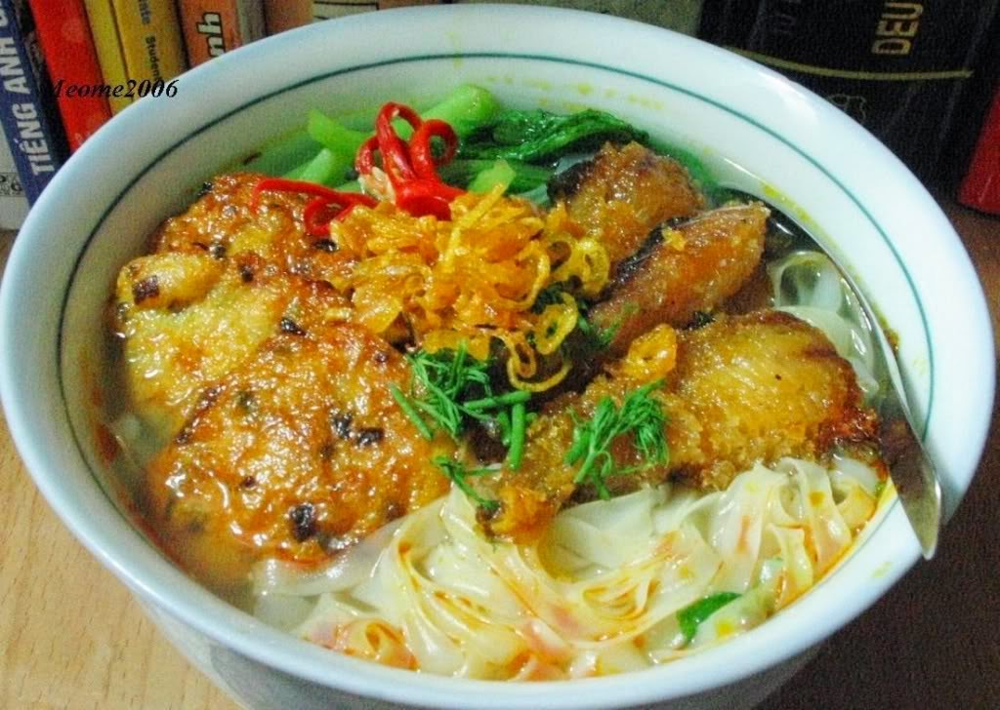

Nổi tiếng bởi sự đơn giản, không cần nhiều nguyên liệu chế biến nhưng vẫn tạo hương vị riêng, canh cá Quỳnh Côi được xem là niềm tự hào của người Thái Bình. Bát canh cá thay vì sử dụng bún, phở, lại được người Thái Bình chọn riêng cho loại thực phẩm sợi mềm ngọt, mịn, dai – bánh đa, tạo dấu ấn cho canh cá Quỳnh Côi mà không món ăn nào khác có được.